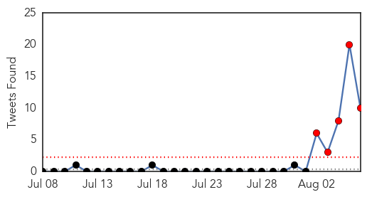
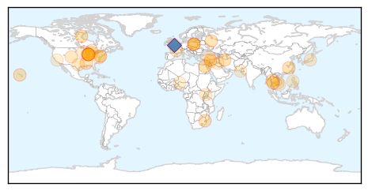
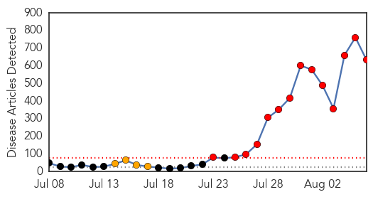
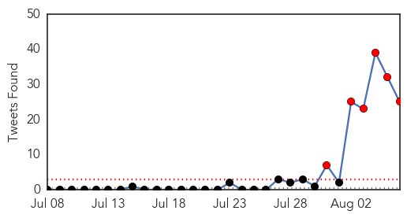
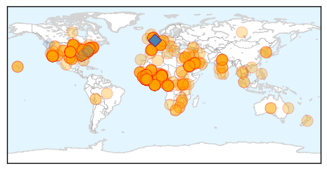
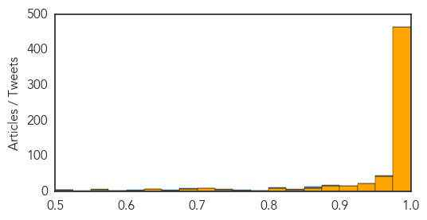

Unknown
30-Day Web Trend
0 alerts, 5 warnings

30-Day Twitter Trend
5 alerts, 0 warnings

Article Locations
Article Confidences

Top Articles:
- 0.995
- Ukiah hotel being examined as likely cause for 3 Legionnaires' cases
- 0.959
- Second case of swine fever detected in Lithuania
- 0.917
- Chicago Tribune
- 0.917
- Chicago Tribune
- 0.917
- Chicago Tribune
- 0.917
- Chicago Tribune
- 0.910
- The world windows to Thailand
- 0.904
- Oh deer: In fighting Lyme disease, are we watching the wrong mammals?
- 0.871
- Study shows herpes zoster vaccine remains effective in protecting older adults against shingles after chemotherapy
- 0.866
- Two Italian aid workers kidnapped in Syria
- 0.866
- Putin orders agricultural import bans in sanction retaliation
- 0.866
- Maliki warns against interference in forming of new Iraq government
- 0.866
- Thailand's King Bhumibol Adulyadej to return to hospital
- 0.866
- China bans beards, veils from Xinjiang city's buses in security bid
- 0.866
- Man leaves a local hardware store with screen doors to prepare his house as a hurricane and a tropical storm approach the Hawaiian islands, in Mililani, Hawaii
- 0.860
- Poor sanitation, poverty behind Swazi diarrhoea outbreak
- 0.757
- Lake Erie harmful algae bloom threatens drinking water supplies
- 0.728
- Rosetta space probe makes historic rendezvous with comet
- 0.722
- Boulder Medical Center Joins CORHIO Health Information Exchange, Enhancing Care Coordination For Area Patients
- 0.693
- Poland, Baltics Agree Measures to Combat ASF
- 0.688
- Experimental non-invasive tests detect rare brain disease
- 0.652
- NorthShore Health Centers Celebrates National Health Center Week 2014
- 0.636
- Pupils taken ill in Tuberculosis outbreak at Beckton school
- 0.616
- New Methods May Make CJD Testing Easier
- 0.611
- NATO warns of invasion by Russian 'peacekeepers'
- 0.601
- Obama vows to boost security ties at close of US-Africa talks
- 0.591
- Mamata's government on the back foot over poor healthcare facilities as encephalitis deaths hit 155
- 0.581
- Episode 2: 'Politics and the AKP in Turkey'
- 0.574
- 8 sick? E. coli O157:H7 confirmed at Minnesota fair
- 0.570
- City offers bounties for dead rats
- 0.564
- Kerry calls for two-state solution as fragile Gaza truce holds
- 0.557
- Karachi’s water has ‘insufficient’ chlorine
- 0.549
- Liberia declares state of emergency as Ebola toll rises
- 0.549
- Common tuberculosis vaccine can be used to prevent infection as well as disease
- 0.542
- Kurds unite in bid to rescue Iraq's Yazidi minority
- 0.530
- Saudi Arabia gives Lebanon $1 billion to fight jihadists
- 0.530
- Israel ready to 'extend Gaza truce unconditionally’
- 0.526
- Drug-resistant malaria a growing threat
- 0.502
- Update - Access to specialty health care out of reach for low-income patients
Top Tweets:
- 0.718
- RT: .@AinaDiazV cómo se propaga la malaria? Y el ébola? Ay madre que te has metido en un berenjenal...
- 0.703
- RT: [[ElianThemonster]] Un tratamiento preventivo mensual con una combinación de fármacos reduce la malaria en niños: El... [[Ha…
- 0.684
- RT: Salud Indica En La Sanidad están confirmados 5 casos de malaria procedentes de Naiguatá según se conoció…
- 0.653
- RT: @aelito_mio El ébola ha matado a menos personas en 40 años que el SIDA o la Malaria en un solo día.
- 0.623
- RT: Claro como en africa mueren de malaria nadie salta.
- 0.619
- RT: Al fin Veracruz terminó con la malaria de no vencer a en más de cinco juegos.. @ClubTiburones
- 0.589
- RT: UHHHHH mosquito vector de la MALARIA en Tarapacá? Eso va a traer problemas para la Fiesta? Iquique
- 0.589
- RT: Más de 3.000 personas mueren al dia por Malaria en África. No le quito importancia al Ébola por supuesto pero un poquito de…
- 0.571
- RT: Mueren dos americanos de ébola y ya pasa a ser la Belen Esteban de los virus sin embargo de malaría mueren 250.000 al año y n…
- 0.531
- RT: @xavieraldekoa el SIDA la malaria y la desnutrición no preocupan en los países avanzados... Eso es de pobres y d…
Ebola
30-Day Web Trend
14 alerts, 4 warnings

30-Day Twitter Trend
6 alerts, 0 warnings

Article Locations
Article Confidences
Top Articles:
- 1.000
- We have Ebola in the US but Africa remains most at risk
- 1.000
- Nigeria in Ebola emergency, asks US for experimental drug
- 1.000
- Experts: More Education Needed to Contain Ebola
- 1.000
- Ebola spreads, Saudis test man suspected of being infected
- 1.000
- Ebola: What is the risk of it coming to France?
- 1.000
- What Is Ebola Virus?
- 1.000
- The Cranberry Eagle Online
- 1.000
- Experts to look at experimental Ebola treatment
- 1.000
- World Health Organisation to consult ethics experts on experimental Ebola drugs
- 1.000
- Otago Daily Times Online News : Otago, South Island, New Zealand & International News
- 1.000
- Deadliest Ebola outbreak being driven by urbanisation
- 1.000
- Deadliest Ebola outbreak being driven by urbanisation
- 1.000
- State of emergency declared on Ebola
- 1.000
- Is the Middle East ready to fight off an Ebola attack?
- 1.000
- How Dangerous Is the Ebola Virus?
- 1.000
- Nigerian nurse dies from Ebola
- 1.000
- Frightened Ebola patients running away
- 1.000
- Saudi Arabia not to permit Haj pilgrims from Ebola affected countries after death of infected man
- 1.000
- Where Is The Ebola Outbreak Now? Updated Map Of Ebola Virus Outbreak Shows Spread Of Cases Outside West Africa
- 1.000
- India Advises Citizens to Defer Travel to West African Nations
- 1.000
- The Most Destructive Myths About Ebola Virus, Debunked
- 1.000
- West African Healthcare Systems Swamped As Ebola Death Toll Tops 900
- 1.000
- South Korean University Bans Nigerian Students Over Ebola Fears
- 1.000
- Homeland Security News Wire
- 1.000
- Ebola Toll Tops 900; Saudis Investigate Death
- 1.000
- Nigerian nurse dies from Ebola
- 1.000
- West African healthcare systems reel as Ebola toll hits 932
- 1.000
- Bodies dumped in streets as West Africa struggles to curb Ebola
- 1.000
- West African healthcare systems reel as Ebola toll hits 932
- 1.000
- Ebola feared to have reached Middle East as man tested for disease dies in Saudi Arabia
- 1.000
- Nigeria acknowledges slow response in Ebola case
- 1.000
- Ebola-skeptics, transmission, survival and treatment: Five facts about the disease
- 1.000
- Ebola outbreak deaths top 930 as WHO emergency meeting convenes
- 1.000
- Battling Ebola: Tracking the Virus
- 1.000
- Liberia declares state of emergency over Ebola virus
- 1.000
- Ebola: Global experts begin emergency talks at WHO
- 1.000
- Saudi man suspected of contracting Ebola dies
- 1.000
- Saudi man suspected of contracting Ebola dies
- 1.000
- Ebola death toll rises; 932 confirmed, World Health Organization says
- 1.000
- World Health Organisation to consult ethics experts on experimental Ebola drugs
- 1.000
- CDC issues highest-level alert for Ebola
- 1.000
- Ebola outbreak: Britons quaratined at home after returning from west Africa
- 1.000
- Liberia declares state of emergency as Ebola death toll rises to 932 — RT News
- 1.000
- What is Ebola? A breakdown of the outbreak
- 1.000
- As Ebola Spreads in Nigeria, Debate About Experimental Drugs Grows
- 1.000
- CDC Getting Dozens Of Calls ‘About People Who Are Ill After Traveling In Africa’
- 1.000
- As Ebola Spreads in Nigeria, Debate About Experimental Drugs Grows
- 1.000
- Deaths from Ebola Outbreak Approaching a Thousand
- 1.000
- The 5 reasons you shouldn’t panic about the Ebola virus
- 1.000
- Over 900 die from Ebola virus disease in West Africa
Showing top 50 articles...
Top Tweets:
- 0.957
- RT: Ebola outbreak began Feb malaria claimed +-300k tuberculosis claimed 600k+ lives. Ebola has attention but is not Africa'…
- 0.907
- RT: A Saudi man suspected of being infected with Ebola virus died at 8:45 a.m. today at hospital in Jeddah: Health Ministry …
- 0.895
- RT: The UN is amid a 2-day emergency meeting to determine whether the Ebola outbreak is a public health emergency of interna…
- 0.875
- RT: ‘Since the Ebola outbreak began ~300000 have died from malaria while tuberculosis has likely claimed >600000.’ htt…
- 0.874
- RT: El murci√©lago transmite el ebola.... Lean lean honorables..... Aqu√≠ hablando de malariaüèÉüí®
- 0.872
- RT: Malaria Poverty SDoH MT: Short list of Africa's health problems: Cancer TB Flu HIV ... Ebola http://…
- 0.846
- RT: Viruela VIH malaria ebola.... Males que se extienden por África ¿o son experimentos de farmaceúticas?"El jardinero fiel" …
- 0.842
- RT: "Since the Ebola outbreak began in February [800-plus deaths] around 300000 people have died from malaria" http://t…
- 0.805
- RT: Since the Ebola outbreak began in Feb 300k people have died from malaria tuberculosis has claimed over 600k lives. http:…
- 0.801
- The patient at Mount Sinai Hospital has tested negative for Ebola.
- 0.753
- RT: Since the Ebola outbreak began in Feb around 300000 people have died from malaria and 600000 from tuberculosis. http://…
- 0.745
- RT: "@hajrah_bah: Ebola virus just made HIV sounds like malaria
- 0.726
- RT: @coyoteadams you aren't getting Ebola or malaria are ya? LOL
- 0.699
- The WHO in an emergency meeting about Ebola. They may declare this a PHEIC. Public Health Emergency of International Concern.
- 0.691
- RT: A call from the UK y'nite and d lady was describing 'Ebola outbreak like Malaria outbreak' whereas IT IS LOCALIZED and CONTAINE…
- 0.658
- RT: We know how to stop Ebola from spreading w/ basic epi & response: find disease isolate patients trace/monitor contacts…
- 0.658
- RT: We know how to stop Ebola from spreading w/ basic epi & response: find disease isolate patients trace/monitor contacts…
- 0.629
- RT: xq skrilex es tu idolo¿ — Me dio cáncer sida inluenza gripe Española peste bubónica malaria ebola cólera... http:/…
- 0.618
- RT: @xavieraldekoa La mortalidad del Ebola llega al 90%la de la malaria menos del 30%el SIDA puede llegar a ser c…
- 0.608
- The seriousness of the Ebola outbreak is a powerful reminder that infectious diseases can strike people anywhere. http://t.co/rqDIrUc3Te
- 0.583
- Breaking: pt with suspected Ebola inf announced yday by MoH died 2day. Doctors say it’s Ebola. Conf’ry test pending! http://t.co/3vKg4oKNLm
- 0.574
- RT: WHO to convene a panel of medical ethicists to explore the use of experimental treatments in the ongoing Ebola outbreak in West A…
- 0.541
- RT: Folks who think biotechs should release their Ebola drugs should read paragraph 2 in this story. Cupboard isn't full h…
- 0.531
- RT: More than 1800 people mostly children die every day from Malaria. 800 people have died from Ebola since February. perspec…
- 0.502
- RT: It doesn't help that the symptoms of ebola are like malaria.